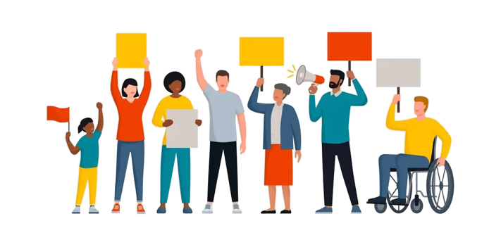

raising public awareness
about the intersection of domestic violence,trauma,substance abuse
and mental health through up-to-date analysis of research,policy and practice

Domestic violence and other lifetime trauma can have
significant mental health consequences.
The Prakash on Domestic violence,trauma & mental Health provides training,support,and
advocates,mental health and substance abuse provider,legal professionals and policymakers
improve agency-and and system-level responses to survivors and their children.Our Work survivor
rooted in principles of social justice .
MISSION
The Prakash on Domestic Violence, Trauma,and Mental Health
promotes survivor-defined healing ,liberation,and equity
by transforming the systems that impacting survivors of
domestic and sexual violence and their families.We envision
a society where all people are free of systemic,collective
and individual trauma.
OUR TRAINED VICTIM ASSISTANCE
SPECIALISTS ARE READY TO HELP.
P:(312)726-7020
TTY:(312)726-4110
F:(312)726-7022


The website is funded through a grant from the office of Crime, Office of Justice Programs, U.S. Department of Justice.Neither the U.S.Department of Justice nor any of its
components operate,control,are responsible for,or necessarilly endorse this website (including,without limitation,its content, technical infrastructure and policies,and any services
or tools provided).